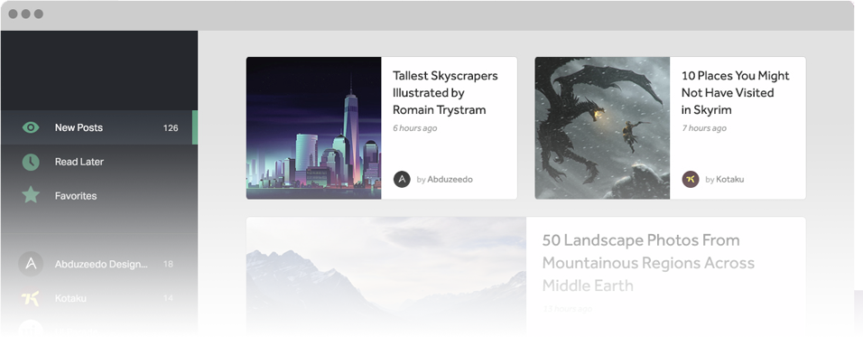
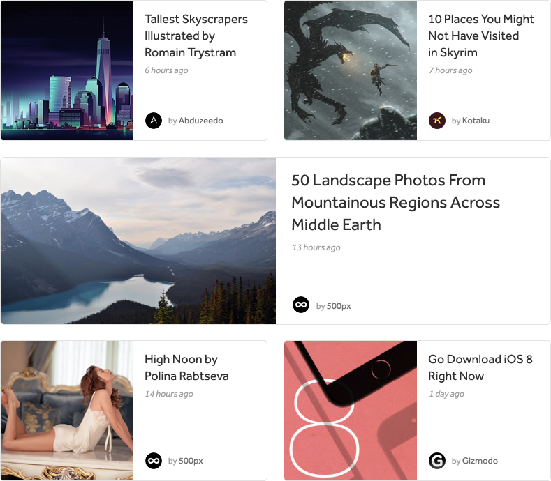

A new approach to how you view your RSS Feeds
Looking at existing RSS Readers, I found that many of them looked outdated, with not much attention to typography and an engaging user experience. I wanted to create an RSS Reader which presented information clearly and beautifully, while also using imagery to draw the reader in. I wanted users to be enticed into clicking on the articles to read more. To do this, I reimagined the user interface to improve in the areas which many existing apps were lacking.
The articles are displayed in 'card' units, which come together in a grid-like layout. Within each of the card units, there is an image accompanying the text. The image creates a point of interest and draws the user in. I established a visual hierarchy within the typography by giving the heading the most visual weight, and adjusted the visual weight of additional informational accordingly.
My first post on Dribbble! An RSS Reader I've been working on, inspired by Claudio Guglieri. Thanks to Brett Stockdale for the invite. Real pixels attached. My first post on Dribbble! An RSS Reader I've been working on, inspired by Claudio Guglieri. Thanks to Brett Stockdale for the invite. Real pixels attached.